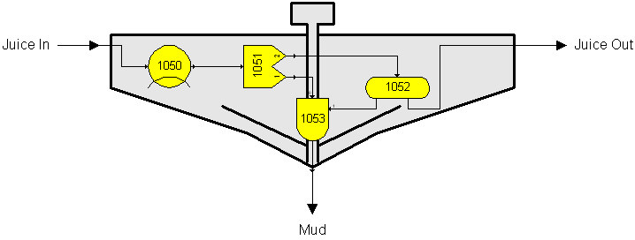

Sugars is used to analyze a sugar factory process by constructing a flow diagram of the process. The flow diagram consists of individual stations with interconnecting flows and external flows that go into the process. External flows are all flows that go into the flow diagram from outside sources; e.g., beets, or cane, into the factory, juice from storage, water for dilution, remelt sugar from storage, sweepings, steam for heating, etc. Individual stations are computer models that use mathematical relationships and actual process data to model the stations used in the process.
All of the external flows are processed by the stations in the flow diagram to provide output flows from each station that are processed by other stations in the flow diagram until all of the material and heat entering the flow diagram is accounted for by the flows and losses leaving the flow diagram. Interconnecting flows within flow diagrams that go to and from each station are called internal flows in contrast to external flows that originate from sources outside the process.
Each station in the flow diagram is given a station number. All output flows from each station are identified and either routed to another station, or shown to leave the flow diagram. Any arrangement of the stations is possible. Therefore, virtually any process can be evaluated provided the stations in Sugars can be used to simulate the actual stations used in the process.
Often combining several stations to model an actual station is necessary if the actual station does not conform to a station available in Sugars. For example, a juice clarifier (see figure below) can be modeled using a cooler station (1050) for heat loss, a separator station (1051) to separate insoluble components (for example, CaCO3) and impurities from the juice, a blender station (1053) to maintain a moisture content for the mud underflow and a distributor station (1052) to feed the blender with sufficient juice to maintain the moisture content in the mud and send the remaining juice out as the overflow (see figure below). Other similar combinations can be used to provide a model of most stations in an actual process that do not have corresponding duplicate stations in Sugars with the same operating characteristics.

Sugars will accept any station number between 1 and 9999. When numbering stations, it is best to start the numbering at a number higher than 1 and allow for gaps between numbers so that future additions can be accomplished easily without having to renumber all of the stations in the model. Using numbers in a given range for each page makes it easier to locate a station. For example, if milling is on one page and all of the station numbers on the milling page are between 500 and 999, then searching for station no. 650 is much easier because it will be located on the milling page.
Keeping the initial model simple is best when building a model of a process, or factory. Do not try to model the intricate details of a process, or factory at the beginning. Add complexity to the model after gaining experience with the simpler model.
The origin and destination station numbers identify flow streams within a flow diagram. If a flow stream leaves the flow diagram, it is given a "0" for the destination station number when the flow stream is stored in the database. And, if a flow stream is an external flow, then the originating station number will be “0”.
A typical 4-effect evaporator station is shown in the figure below to illustrate how a flow diagram can be constructed using the different stations available in Sugars. As shown, each station has been assigned a station number and all of the flows from each station go to another station, or leave the flow diagram; for example, syrup, condensates and vapors. The only external flows into the flow diagram are steam, juice and cold water. Distributor stations (for example, station numbers 516, 526 and 536) are used to split a flow stream into several flows and receiver stations (for example, station numbers 515, 525, 531 and 535) are used to combine several flow streams. Intermingling of material, steam, vapor, and condensate lines within the flow diagram allows Sugars to do the complete heat, material and color balances. After the model has been constructed, Sugars can quickly evaluate the effects of changes made to the process.
Some stations can have more than one input flow. The input ports of the station determine the type of flow. For example, a pan station will have a syrup flow into port number 0 and a vapor flow into port number 1. The input ports are labeled on each station when it has more than one input. Receivers can have up to ten input flows, and tanks and melters can have up to ten input flows and one heating flow. Blenders and thermocompressors have two input flows. Centrifugals have massecuite and wash input flows.
In all cases, stations that use heat (for example, pans, evaporators, melters, tanks and heat exchangers) are limited to a quantity of one input flow into the heating port.
Heater, melter and tank stations can have either coil, or injection, heating. Coil heating is used to transfer heat from the heating flow to the material flow without the two flow streams being mixed (that is, both a material flow and heating flow go into and leave the station); whereas, with injection heating, the heating flow is injected into the material flow stream (that is, only a material flow stream leaves the station). Sugars gives full consideration to changes that occur in the material flow stream due to injected heating flows.
A distributor can have up to ten output flows, a centrifugal has either two (or three) outputs, and a separator has two output flows - all other stations are limited to only one output material flow stream. Vapor and condensate output flows from a station depend on the station and its input values; for example, injection, or coil heating for heat exchangers, tanks and melters; whereas, pans, dryers and evaporators always have material, vapor and condensate output flows.
Stations that have both material and heating input flow streams process the flows based on the input port used for the input flow. The station will identify, by input port number, which flow stream is the material and which is the heating flow.
Phase changes that occur in the process are considered in the appropriate stations. For example, crystallizers and pans can have a phase change for sucrose going from dissolved to crystalline, and a cooler station can cause vapor condensation due to heat loss in the station. The stations in Sugars have been designed to give considerable control over changes in flow stream characteristics.
Normally, a receiver station is used to accept multiple inputs for any station that needs to have more than one input flow; for example, in the previous flow diagram example, two condensate flows go to the receiver (station no. 531) that feeds the flash tank (station no. 532). Since a flash tank can accept only one input flow, a receiver station is placed in front of the flash tank to accept the two input flows (see Station Modules section for further information about each station).